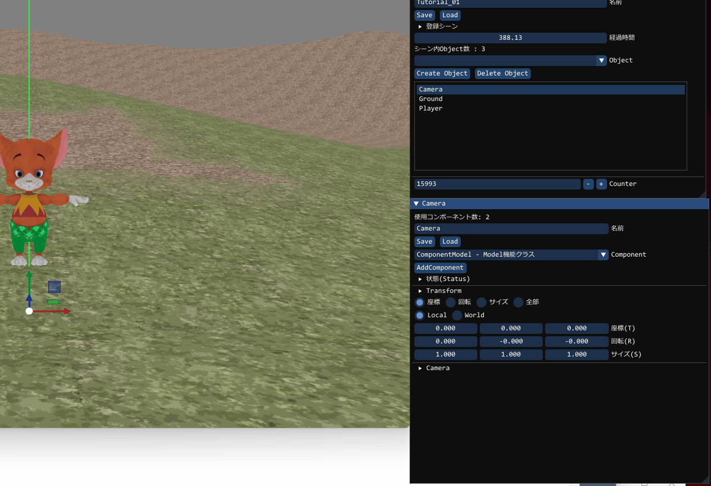
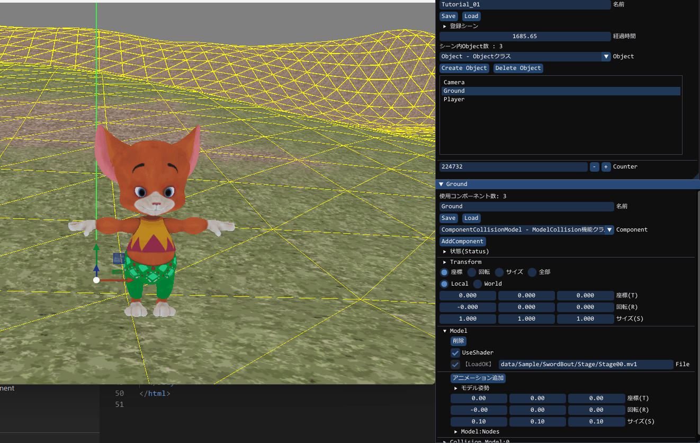

モデルコリジョンコンポーネント
この章は前章「GUIで移動テスト」で行った状態の続きとなります。まずは地面のモデル形状に合わせたコリジョンを作成しましょう
以下のようにGroundに対して動作を行います。

これでモデル形状にあったコリジョンが出来上がりますカプセルコリジョンコンポーネント
次にPlayerにカプセルコリジョンを割り当てます

この状態で W/A/S/D キーを押すと地面に潜らずに移動します。ただし、このままだと宙に浮いてしまうため、このコリジョンに重力をつけましょう。

次はキャラに追従するカメラを作ります